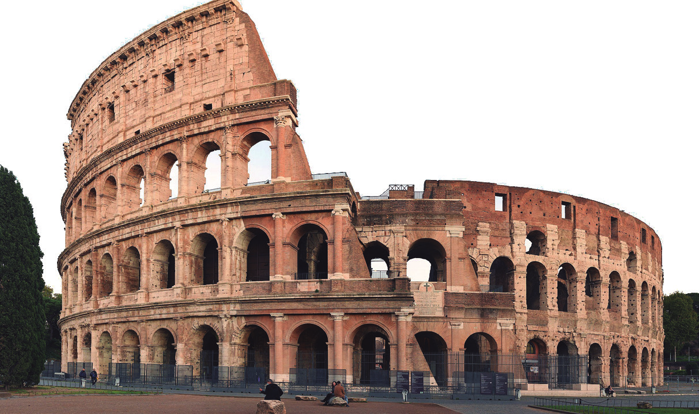
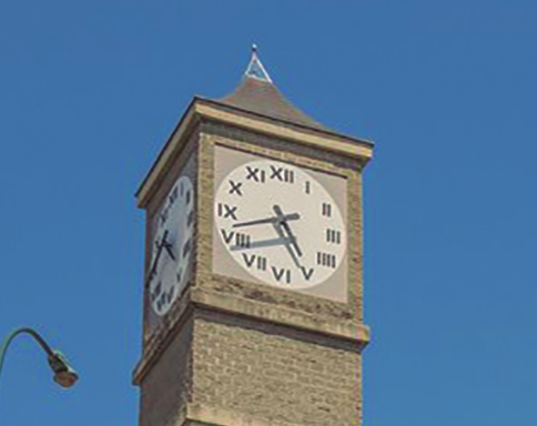
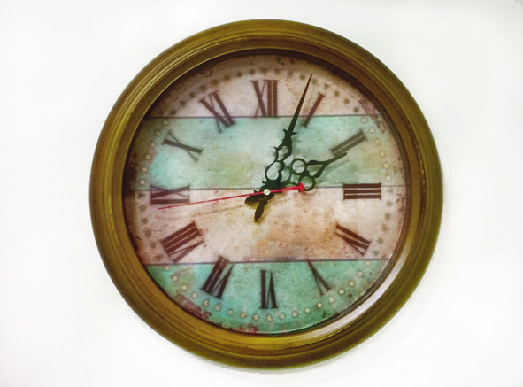

17
CAPÍTULO 2 - Sistemas de numeração
A necessidade de contar surgiu com o passar do tempo, conforme os costumes de cada povo. Desse modo, diferentes sistemas de numeração surgiram. Observe no mapa a seguir os lugares onde surgiram alguns sistemas de numeração.
Vejamos no quadro a representação dos números 1 ao 10 e o número 100 em alguns sistemas de numeração.
![Tabela com 4 linhas e 12 colunas. Na primeira linha, os números 1, 2, 3, 4, 5, 6, 7, 8, 9, 10 e 100. Na segunda linha, a representação dos sistemas de enumeração dos Egípcios, nesta ordem I, II, III, IIII, III em cima e II abaixo, III em cima e III abaixo, IIII em cima e III abaixo, IIII em cima e IIII abaixo, IIIII em cima e IIII abaixo. Representando o número 10 o símbolo em formato da letra U ao contrário e representando o número 100 um símbolo em espiral como se fosse uma corda enrolada. Na terceira linha, a representação dos sistemas de enumeração dos babilônicos, cada unidade formada por um bastão na vertical com a parte de cima arredondada, nesta ordem: uma unidade, duas uma do lado da outra, três com duas em cima e uma abaixo. Quatro, com duas em cima e duas abaixo. Cinco com duas em cima, duas no centro e uma abaixo. Seis com três em cima e três abaixo. Sete três em cima, três no centro e uma abaixo. Oito com três em cima, três no centro e duas abaixo. Nove com três em cima, três no centro e três abaixo. O número dez é representado pela unidade na horizontal. Número 100, uma unidade na vertical e ao lado quatro na horizontal, duas em cima e duas abaixo. Na quarta linha, a representação dos números romanos, na ordem: I, II, III, IV, V, VI, VII, VIII, IX, X e C representado o número 100.](../../resources/images/tabela.PNG)
Observe, na página a seguir, algumas características desses sistemas de numeração.
18
Acervo Museu do Louvre
![A escultura do servidor funerário do rei Ramsés IV. Ele tem um adorno na cabeça e o seu corpo da cintura aos pés é comprido na cor branca com escritos egípcios. Ao lado dele, um papiro com a representação de sete sistemas números do Egito. O número 1 é uma linha vertical, o 10 tem o formato da letra U ao contrário, o 100 um espiral como se fosse uma corda enrolada, o 1.000 representado por uma flor de lótus (sendo a parte de cima um símbolo oval com a ponta da direita formando um bico, no centro uma flecha apontando para baixo e a base é um círculo cortado no meio). 10.000 no formato de um dedo indicador, 100.000 um sapo de perfil esquerdo e o 1.000.000 representado por um homem com os braços erguidos.](../../resources/images/001028.png)
Por meio de vários monumentos com inscrições e documentos em papiros, é que os arqueólogos conseguiram decifrar o sistema de numeração egípcio.
![A escultura do servidor funerário do rei Ramsés IV. Ele tem um adorno na cabeça e o seu corpo da cintura aos pés é comprido na cor branca com escritos egípcios. Ao lado dele, um papiro com a representação de sete sistemas números do Egito. O número 1 é uma linha vertical, o 10 tem o formato da letra U ao contrário, o 100 um espiral como se fosse uma corda enrolada, o 1.000 representado por uma flor de lótus (sendo a parte de cima um símbolo oval com a ponta da direita formando um bico, no centro uma flecha apontando para baixo e a base é um círculo cortado no meio). 10.000 no formato de um dedo indicador, 100.000 um sapo de perfil esquerdo e o 1.000.000 representado por um homem com os braços erguidos.](../../resources/images/000008.png)
Reinaldo Rosa/Acervo da Editora
Nesse sistema:
► cada símbolo pode ser repetido até nove vezes;
►o sistema é aditivo, ou seja, o valor do número é igual a soma dos valores dos símbolos. Ex.: ∩∩∩|| → 32;
► independente da posição, o valor do símbolo é sempre o mesmo. Observe: ∩∩∩|| ou ∩|∩|∩ representam o mesmo número.
Sistema de numeração babilônico
Os povos que habitaram a Mesopotâmia há muitos anos, dentre eles os babilônicos, criaram seu próprio sistema de numeração. Eles utilizavam bastonetes para escrever sobre placas de barro quando estas ainda estavam mole. Depois, elas eram levadas ao forno para endurecer.
Muitas dessas placas foram encontradas pelos arqueólogos na região onde ficavam as cidades da Mesopotâmia, permitindo assim a identificação do sistema de numeração desse povo. De acordo com esse sistema:
► o símbolo representa o número 1:
► o símbolo representa o número 10:
►o símbolo pode ser repetido até nove vezes:
►o símbolo pode ser repetido até cinco vezes:
para números maiores ou iguais a 60 também se usa o símbolo . No entanto, deve haver um espaço maior dividindo os símbolos:

19
Sistema de numeração romano
O sistema de numeração romano ainda hoje é utilizado em relógios, livros e fachadas de edifícios antigos, por exemplo.
Nesse sistema:
► são utilizados símbolos para representar os números;

► os símbolos I, X, C e M podem ser repetidos até três vezes consecuti-vas. Já os símbolos V, L e D só podem aparecer uma única vez;
II → 2
XXX → 30
CC → 200
MMM → 3 000
► um símbolo escrito à direita de outro de valor igual ou maior indica uma adição do seu valor;
VI → 6
XII → 12
XVIII → 18
XXVII → 27
CCCLXXXII → 382
► os símbolos I, X e C escritos à esquerda de outro de maior valor indica que devemos realizar uma subtração. Esses casos são:
• I à esquerda de V ou de X;
• X à esquerda de L ou de C;
• C à esquerda de D ou de M.
Nesse sistema, para a representação de números maiores ou iguais a 4 000, utilizam-se traços sobre os símbolos: um traço significa que o número é multiplicado por 1 000; dois traços significam que o número é multiplicado por 1 000 000.
IV → 4 × 1 000 = 4 000
XVII → 17 × 1 000 = 17 000
IV → 4 × 1 000 000 = 4 000 000
XVII → 17 × 1 000 000 = 17 000 000
FeaturedPics/wikimedia.commons
20
► ENCONTRE SOLUÇÕES
1. 24
Utilizando o sistema de numeração egípcio represente, no caderno, os números a seguir.a) 24
b) 130
c) 1101
d) 102000
2.Alguns números foram representados utilizando-se o sistema de numeração babilônico. Escreva, no caderno, esses números usando o nosso sistema de numeração.
a)

b)

c)

3.O sistema de numeração romano é utilizado até hoje. Faça uma pesquisa para saber onde podemos encontrá-lo. Anote suas observações no caderno e depois apresente aos colegas e ao professor.
4.Usando o nosso sistema de numeração, represente, no caderno, os números a seguir.
a) LXII
b) CCXLIV
c) CDIX
d) DCCXXX
e) CMVIII
f) MMDCIX
5. Em seu caderno, escreva com símbolos romanos:
a) 38
b) 247
c) 985
d) 8 000
e) 74
f) 460
g) 2 944
h) 40 000
i) a data do seu aniversário;
j) o ano em que estamos.
6. Observe as imagens a seguir.
 a) Na primeira fotografia há o relógio da fachada da Torre do Relógio do Swiss Park, em Campinas, SP. Na segunda fotografia tem-se um relógio de parede. Você observou como os números foram representados? Comparando os dois relógios, qual a diferença entre eles? Por quê?
21
7. Leia o texto a seguir, depois, com um colega, respondam às questões no caderno.
O Estatuto da Criança e do Adolescente (ECA), foi sancionado em 13 de julho de 1990, e é o principal instrumento normativo do Brasil sobre os direitos da criança e do adolescente. Leia a seguir um trecho:

Capítulo II
Do Direito à Liberdade, ao Respeito e à Dignidade
Art. 15. A criança e o adolescente têm direito à liberdade, ao respeito e à dignidade como pessoas humanas em processo de desenvolvimento e como sujeitos de direitos civis, humanos e sociais garantidos na Constituição e nas leis.
Art. 16. O direito à liberdade compreende os seguintes aspectos:
I - ir, vir e estar nos logradouros públicos e espaços comunitários, ressalvadas as restrições legais;
II - opinião e expressão;
III - crença e culto religioso;
IV - brincar, praticar esportes e divertir-se;
V - participar da vida familiar e comunitária, sem discriminação;
VI - participar da vida política, na forma da lei;
VII - buscar refúgio, auxílio e orientação.
Lyndsay Esson / Flickr
Art. 17. O direito ao respeito consiste na inviolabilidade da integridade física, psíquica e moral da criança e do adolescente, abrangendo a preservação da imagem, da identidade, da autonomia, dos valores, ideias e crenças, dos espaços e objetos pessoais.
BRASIL. Estatuto da Criança e do Adolescente. Lei n.º 8.069, de 13 de julho de 1990. Disponível em: https://www. gov.br/mdh/pt-br/centrais-de-conteudo/crianca-e-adolescente/estatuto-da-crianca-e-do-adolescente-versao-2019. pdf. Acesso em: 9 mar. 2022.
a) Qual o assunto abordado no texto?
b) Na opinião de vocês, esses direitos estão sendo respeitados
c) Quais ações poderiam ser feitas para garantir que esses direitos sejam respeitados?
d) No texto apresentado foi utilizado um sistema de numeração para indicar os incisos. Que sistema de numeração é esse?